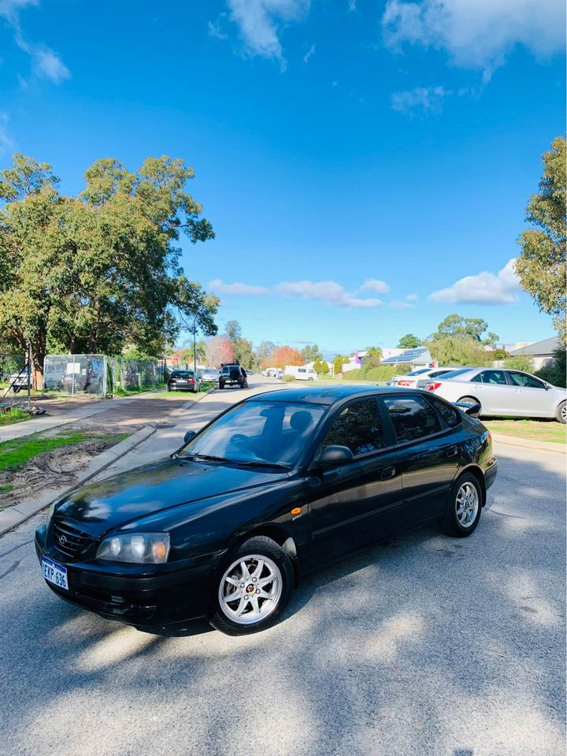

Hyundai Wreckers Melbourne has an extensive range of Genuine Used Hyundai parts available. Look for your Hyundai model in our scrap cars section and you can view all the spare parts available. Hyundai is Korea’s largest car manufacturer and a popular choice among Australians with various Santa Fe models winning SUV and 4WD of the year. Other popular models include the Accent, Elantra and Veloster.
2016 Santa Fe 2016 Santa Fe Sport 2016 Elantra 2016 Veloster 2015 Tucson 2013 Genesis Coupe 2013 Elantra Coupe 2013 Santa Fe 2011 Elantra 2011 Santa Fe Sport 2011 Santa Fe Limited 2011 Veloster 2011 Elantra GT 2011 Santa Fe Limited 2012 Elantra Touring 2012 Elantra GT Coupe 2012 Elantra Sport 2012 Elantra GT Coupe 2012 Elantra Touring (Limited) 2011 Elantra 2010 Elantra 2009 Elantra 2007 Elantra 2008 Elantra Coupe 2008 Elantra GT 2008 Santa Fe 2008 Elantra Sport 2008 Santa Fe 2008 Veloster 2008 Veloster 2008 Veloster Turbo 2007 Elantra Sport If you are shopping for parts, Hyundai Wreckers is one of Australia’s largest Hyundai car parts suppliers. Look for your Hyundai model in our scrap cars section and you can view all the spare parts available.
Hyundai Genuine Used Parts in Australia include: Hoses and Air / Ventilation / Filters Wheels Brakes Cargo Carriers / Inverters / Starter & alternator Coolant Battery Gaskets and Sealant Starter & alternator cover Upholstery Rear Bumper Leather Heated Seats Upholstery Protection For a comprehensive list of stock parts for the Hyundai range please visit Hyundai Wreckers on Facebook. Hyundai Wreckers: Local Wreckers Perth Hyundai Wreckers Perth has an extensive range of Genuine Used Hyundai parts available. Look for your Hyundai model in our scrap cars section and you can view all the spare parts available.
This is a large section covering spares for the Accent, Accent hybrid, i10, i20, i30, i40, i45, Elantra, Elantra GT, Elantra R, Elantra Coupe, Elantra Touring, Elantra Sport, Veloster and the Santa Fe.
52 Sydney Rd, Elsternwick VIC 3046 Tel: 02 9576 3429 www.hyundaiwreckers.com.au SCRAP CARS Limited to 10 cars per week (via Gumtree) and this is not a used car lot. If you have your own car and want to scrap it for our website contact us for a quote. Clearing Out: Ford Focus, Mazda3, Honda Accord, Toyota Corolla At Cardiff NSW we buy used cars, especially SUVs, you’ll need a good write up and 2 pictures for a price quote. You also need to contact us as soon as possible because it’s selling out quick. SCRAP CARS Swap meet under the stars in the huge paddock. Good prices on day hire with dumpers, lots of exercise for the kids and coffee for the dads. Always in good condition with a little less rust than new.

www.hyundaiwreckers.com.au 9163 4400 The Used Hyundai Calibers Supermarket: VEHICLES FOR SALE IN SOUTH AUSTRALIA Not all the days of the week are good for buying cars! But some are, and this is one of those days! Why not jump online and check out the good deal on a bargain car! If you’ve got a used Hyundai and are in need of a part, car condition checker or a good mechanic in Karrinyup or Perth, visit our Used Hyundai Supermarket now! The Used Hyundai Supermarket in Karrinyup is the leading local Hyundai Supermarket. At The Used Hyundai Supermarket you will find a large range of new and second-hand Hyundai cars for sale in Australia. To find out more visit: http://www.theusedhyundai.com.au/ Used Hyundai Supermarkets and Compounds Australian Used Hyundai Supermarkets www.
This article shows you how to read a Hyundai engine code. Take out the plastic pop-off cover on the engine and inspect the number of cylinders and the date codes. From there you can work out how old the engine is and what condition it is in. You will learn the type of engine used in an Australian Hyundai. You will find the different Hyundai models, have a look at a selection of parts for each of them and discuss how they are used and by whom. Finally, you can see the range of genuine and illegitimate used parts for Australian Hyundai models available.
Address:103 Sheffield Rd, Welshpool WA 6106
Phone: (08) 9358 1392